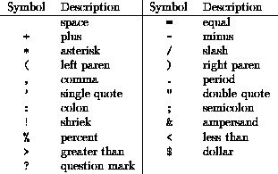

Next: Significance of Blanks
Up: Language Elements
Previous: Source Form
The following are valid in a Fortran 90 program:

For more information, click here

Next: Significance of Blanks
Up: Language Elements
Previous: Source Form
Adam Marshall ©University of Liverpool, 1996
Tue Nov 26 19:51:50 GMT 1996